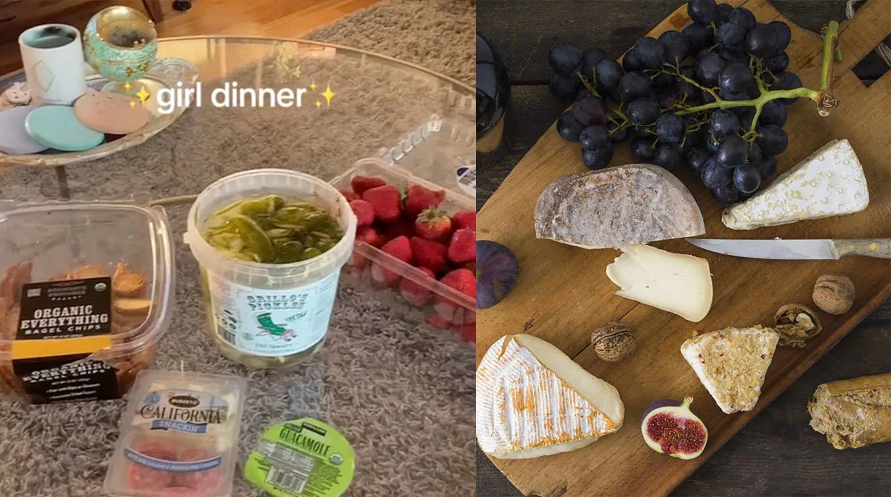

Slop Dictionary / girl dinner
What Is Girl Dinner?
Bread, cheese, fruit, pickles, crackers, leftovers. Dinner has been assembled.
What counts as girl dinner?
Bread and cheese. Crackers and dip. Fruit and pickles. Tinned fish. Leftover pasta. Cereal. A yogurt bowl. Three items from the fridge that would never appear together on a restaurant menu.
The key feature is assembly. You are making dinner happen, not auditioning for Top Chef.
Where did the phrase come from?
Girl dinner went viral on TikTok in 2023 as a name for this kind of improvised solo meal. The meal existed long before the term did.
Once the phrase had a name, the internet immediately started photographing it, parodying it, ranking it, and inventing male countercategories.

Girl dinner went viral in 2023 after Olivia Maher posted bread, cheese, grapes, and pickles as her ideal low-effort dinner.
Source: Know Your Meme: Girl DinnerGirl dinner vs foidslop
Girl dinner is one branch of foidslop food. Matcha, tiny treats, snack plates, cottage cheese bowls, toast, tinned fish, and little desserts sit comfortably nearby.
Foidslop is much broader. It can also describe the game running on the laptop, the username posting the plate, and the romance show playing in the background.
Sources / receipts